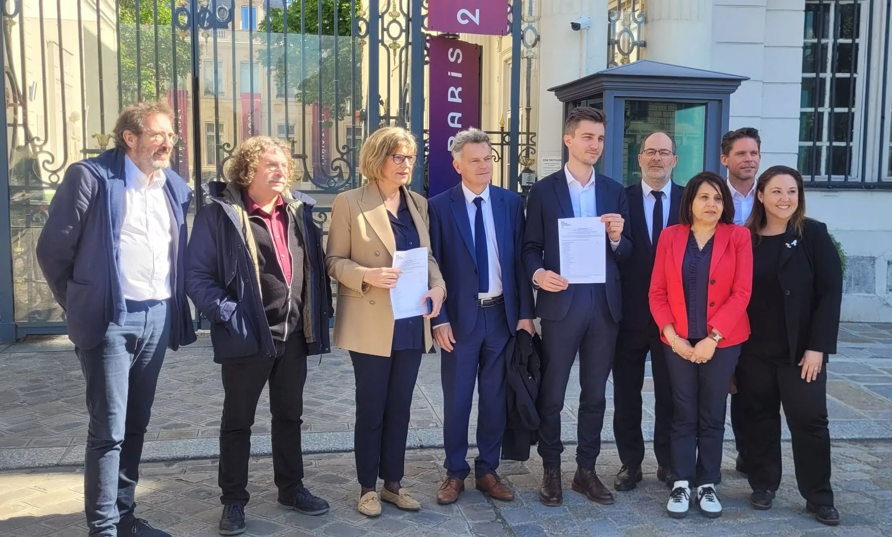
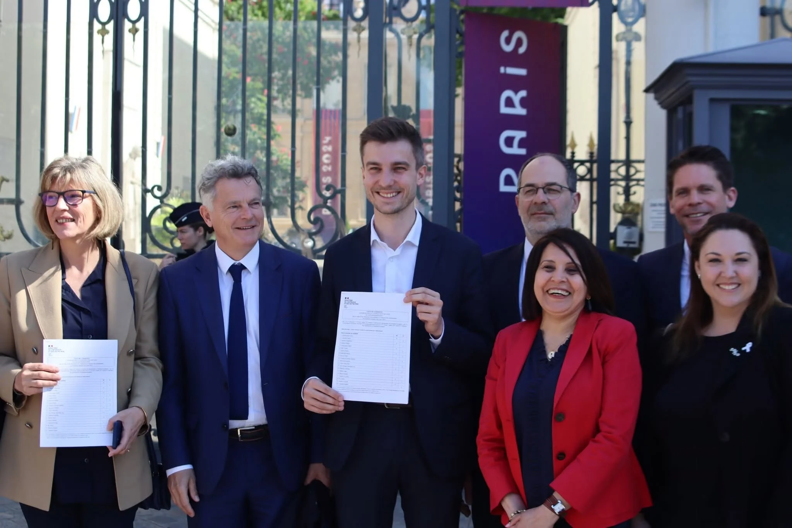

Publication relayée par le PCF 79
La liste de la Gauche unie pour les européennes est déposée
Date de mise à jour indiquée par Facebook · 7 mai 2024
Texte de la publication · PCF national
La liste de la Gauche unie pour le monde du travail a été officiellement déposée ce matin !
Si vous pensez que la priorité ce sont les salaires, le pouvoir d'achat, la baisse des factures et les services publics, alors le 9 juin, reprenez la main avec Léon Deffontaines et l'ensemble des candidates et candidats de la Gauche unie pour le monde du travail.


Sources
PCF national · publication relayée par le PCF 79 · bibliothèque Facebook · AR-0002-FB-01399
À lire aussi · Face au budget d’austérité, le PCF propose un pacte d’avenir